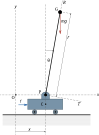
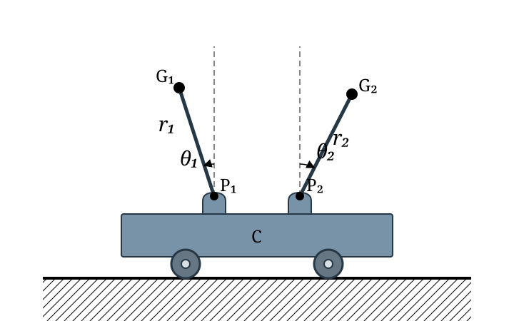
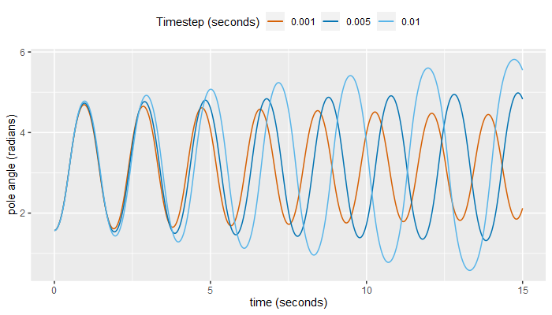
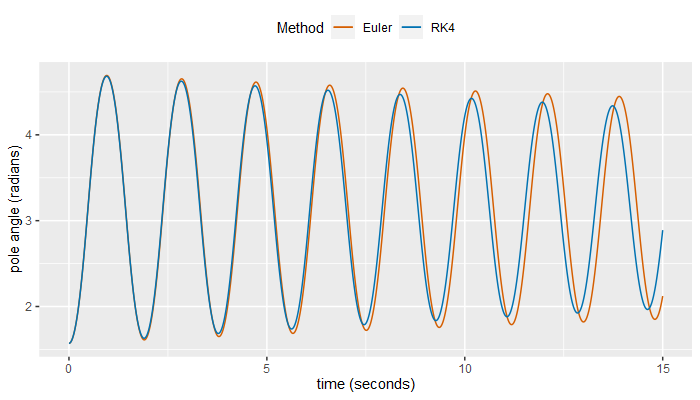

The cart and pole task is a classical benchmark problem in control theory and reinforcement learning [3,2,4], also known as the inverted-pendulum or pole, stick, or broom-balancing task. This paper derives the equations of motion for the cart-pole system and provides supporting discussion and analysis.
From Lundberg and Barton [3]:
The inverted-pendulum system is a favourite example system and lecture demonstration of students and educators in physics, dynamics, and control. This system is a simple and valuable laboratory representation of an unstable mechanical system. It is also often used to model the control problems encountered in the flight of rockets and missiles in the initial stages of launch, when the airspeed is too small for aerodynamic stability.
Section 2 of this paper defines the cart and pole physical model. In section 3 we derive the equations of motion for the model, for a single pole and also for multiple poles. Section 4 specializes those equations for a pole with uniformly distributed mass.
Section 5 presents a final complete set of recommended equations, and section 6 discusses the application of numerical methods in the simulation of the cart and pole task.
Appendices A and B provide brief introductions to d'Alembert's principle and to moment (torque) sign conventions, respectively, in support of the derivations in section 3.
Appendices C, D and E compare the equations presented by Cannon, Barto et al., and Wieland with the equations derived here. They preserve each source's notation before mapping it into this paper's notation, explain differences in formulation and interpretation, and identify discrepancies where the available source evidence supports doing so.
For conciseness we will generally refer to the cart-pole task, model, or system, rather than the 'cart and pole balancing task' or 'inverted pendulum balancing task', etc., and pole is generally preferred over inverted pendulum or stick.
The word pendulum may occasionally be used when discussing oscillation or rotation of the pole around its pivot point, thus emphasising that the pole is behaving as a pendulum. Furthermore, pendulum will generally refer to an ideal pendulum unless otherwise stated, i.e. a point mass attached to the end of a massless rod.
Consider the physical model shown in figure 1. A cart is positioned on a track running horizontally, and an inverted pendulum is attached to the cart with a hinge that allows rotation around pivot point P in the xy plane only, i.e. the pendulum is free to fall horizontally left-right, but not 'out' of the diagram. The pendulum's initial position is near vertical, and an external horizontal force of variable magnitude is applied to the cart to maintain the pendulum in a balanced and upright position.
The model is considered to represent an unstable system because an external control force is required to keep the pendulum balanced; as opposed to a downward hanging pendulum in which the force of gravity alone results in stable oscillation about the downward vertical.
Figure 1 is drawn as a centre-of-mass schematic. For an ideal point-mass pendulum, all of the pendulum's mass is located at G, which may be imagined as a bob at the end of a massless rigid rod. For a uniform rigid pole, G is instead the pole's centre of mass; the physical pole extends from the pivot through G to its far end, so its full length is twice the distance PG.

Table 1: Symbols and labels used in figure 1 and throughout this paperSelected additional symbols used throughout this paper:
$O$ Origin of the fixed Cartesian $xy$ coordinate frame. The positive $x$ direction is to the right and the positive $y$ direction is upwards. $C$ The cart's centre of mass. $P$ Pivot point of the inverted pendulum. $G$ The pendulum or pole's centre of mass, located at distance $r$ from point P. $L$ Full physical length of the pole. $r$ Distance from pivot point P to the pendulum or pole's centre of mass. For a uniform pole $r=L/2$. $T,R$ An alternative coordinate frame with the R axis parallel to the pendulum (vector PG). The TR coordinate frame rotates and moves horizontally relative to the fixed (or 'world') Cartesian coordinate frame. $x$ Horizontal coordinate of the cart on the track. $\theta$ Angle of the pendulum in radians, measured as a deviation from the vertical. The pendulum is at 0° when oriented vertically straight up, +90° when horizontal and to the right of the pivot point, -90° when horizontal and to the left of the pivot point, and $\pm180^\circ$ when oriented vertically down. $m$ Mass of the pendulum or pole. $g$ Gravitational acceleration (in m/s2). Here g is taken to be the directionless magnitude of the acceleration caused by gravity (i.e. approximately 9.8 m/s2 for gravity on Earth). The direction of gravitational acceleration is taken into account in the formulation of the equations, therefore the sign of g is positive. $f$ An external variable horizontal force applied to the cart (in Newtons). A positive value represents a push to the right, and a negative value represents a push to the left.
$\dot x, \ddot x$ The cart's x-axis velocity and acceleration, respectively. $\dot x_G, \ddot x_G$ Point G's x-axis velocity and acceleration, respectively. $m_c$ Mass of the cart. $m_{\mathrm{tot}}$ Total mass of the cart-pole system. For one pole, $m_{\mathrm{tot}}=m_c+m$; for multiple poles, $m_{\mathrm{tot}}=m_c+\sum_i m_i$. $J$ The pole body's moment of inertia about its own centre of mass. For an ideal point-mass pendulum, $J=0$.
Conventions:
A positive horizontal force represents a push to the right. A positive vertical force represents a push upwards. A positive angular velocity represents clockwise rotation. A positive angular acceleration represents clockwise acceleration. A moment is the turning effect of a force about a point or axis; it is also called torque. The rotational sign conventions deliberately use opposite positive directions: moments follow the right-hand rule and are positive anticlockwise, whereas $ heta$, $\dot\theta$, and $\ddot\theta$ are positive clockwise. See appendix B for a fuller explanation.
The position of the pole's centre of mass G relative to P is determined by the constant distance $r$ and the angle $\theta$, measured from the vertical as shown in figure 1. Thus its horizontal component uses $\sin\theta$, and its vertical component uses $\cos\theta$:
Taking the derivative of (1) and (2) with respect to time gives the XY velocity of G relative to P. Because $r$ is constant, only $\theta$ varies with time.
Velocity (x-axis):
\begin{align} \frac{d(x_{G|P})}{dt} &= \frac{d(r\sin\theta)}{dt} \\[3ex] &= \frac{d(r\sin\theta)}{d\theta} \cdot \frac{d\theta}{dt} \tag*{Chain rule} \\[3ex] \dot x_{G|P} &= r (\cos\theta) (\dot\theta) \tag*{Newton's notation} \\[3ex] \dot x_{G|P} &= r\dot\theta \cos\theta \tag{3} \end{align}Velocity (y-axis):
\begin{align} \frac{d(y_{G|P})}{dt} &= \frac{d(r\cos\theta)}{dt} \\[3ex] &= \frac{d(r\cos\theta)}{d\theta} \cdot \frac{d\theta}{dt} \tag*{Chain rule} \\[3ex] \dot y_{G|P} &= r (-\sin\theta) (\dot\theta) \tag*{Newton's notation} \\[3ex] \dot y_{G|P} &= -r\dot\theta \sin\theta \tag{4} \end{align}Taking the derivative of (3) and (4) with respect to time gives the XY acceleration of G relative to P, for a given pendulum angle $\theta$, angular velocity $\dot\theta$ and angular acceleration $\ddot\theta$.
Acceleration (x-axis):
\begin{align} \frac{d(\dot x_{G|P})}{dt} = \frac{d^2(x_{G|P})}{dt^2} &= \frac{d(r \dot\theta \cos\theta)}{dt} \\[3ex] &= r \left[ \frac{d(\dot\theta \cos\theta)}{dt} \right] \\[3ex] &= r \left[ \frac{d\dot\theta}{dt} \cos\theta + \dot\theta \frac{d(\cos\theta)}{dt} \right] \tag*{Product rule} \\[3ex] &= r \left[ \frac{d\dot\theta}{dt} \cos\theta + \dot\theta \frac{d(\cos\theta)}{d\theta} \cdot \frac{d\theta}{dt} \right] \tag*{Chain rule} \\[3ex] \ddot x_{G|P} &= r \left[ \ddot\theta \cos\theta - \dot\theta^2 \sin\theta \right] \tag{5} \end{align}Acceleration (y-axis):
\begin{align} \frac{d(\dot y_{G|P})}{dt} = \frac{d^2(y_{G|P})}{dt^2} &= \frac{d(-r \dot\theta \sin\theta)}{dt} \\[3ex] &= -r \left[ \frac{d(\dot\theta \sin\theta)}{dt} \right] \\[3ex] &= -r \left[ \frac{d\dot\theta}{dt} \sin\theta + \dot\theta \frac{d(\sin\theta)}{dt} \right] \tag*{Product rule} \\[3ex] &= -r \left[ \frac{d\dot\theta}{dt} \sin\theta + \dot\theta \frac{d(\sin\theta)}{d\theta} \cdot \frac{d\theta}{dt} \right] \tag*{Chain rule} \\[3ex] \ddot y_{G|P} &= -r \left[ \ddot\theta \sin\theta + \dot\theta^2 \cos\theta \right] \tag{6} \end{align}Equations (5) and (6) convert the motion of G, stated in terms of angle and distance from P, into XY acceleration components. They describe two distinct effects: terms dependent on angular velocity ($\dot\theta$), and terms dependent on angular acceleration ($\ddot\theta$). At this stage they describe motion only, not the forces that cause it.
The terms dependent on angular velocity describe centripetal acceleration. This acceleration is directed along PG, towards the centre of rotation P, and is required whenever G is moving along a circular arc. The magnitude of the corresponding centripetal force $F_c$ for a mass $m$ at a given radius $r$ and angular velocity $\omega$ is:
$$ F_c = mr\omega^2 $$
As a basic check, the x-axis centripetal term in equation (5) is zero when the pole is vertical and has its maximum magnitude when the pole is horizontal. Similarly, the y-axis centripetal term in equation (6) is zero when the pole is horizontal and has its maximum magnitude when the pole is vertical.
The terms dependent on angular acceleration describe tangential acceleration. This acceleration is perpendicular to PG, i.e. along the circular arc swept out by G. If $\dot\theta$ is non-zero but constant then G has centripetal acceleration, but no tangential acceleration. If $\dot\theta$ is changing then G also has tangential acceleration.
These angular acceleration components describe the relationship between a moment (or torque) acting on the pendulum and the resulting tangential acceleration of point G.
Equations (5) and (6) describe the acceleration of point G relative to P. Therefore to obtain the absolute acceleration of G (i.e. acceleration relative to point O, or the 'world' XY frame) we add the x-axis acceleration of point P to equation (5). The cart does not move vertically, therefore the absolute y-axis acceleration is given by $\ddot y_{G|P}$.
Absolute acceleration (x-axis):
\begin{align} \ddot x_G &= \ddot x_{G|P} + \ddot x \\[3ex] \ddot x_G &= r \left( \ddot\theta \cos\theta - \dot\theta^2 \sin\theta \right) + \ddot x \tag{7} \end{align}Absolute acceleration (y-axis):
\begin{align} \ddot y_G &= \ddot y_{G|P} \\[3ex] \ddot y_G &= -r \left( \ddot\theta \sin\theta + \dot\theta^2 \cos\theta \right) \tag{8} \end{align}In Cannon [2] a vector notation is used as well as an alternative coordinate frame TR (shown in figure 1), use of which results in the following more concise definition of the pendulum mass centre's acceleration, here written using point G and distance $r$:
$$ \mathbf{a}^G = \mathbf{1}_x(\ddot x) + \mathbf{1}_T(r\ddot\theta) + \mathbf{1}_R(-r \dot\theta^2) \tag{9} \\[2ex]$$Where $\mathbf{1}_x()$ denotes a unit vector in the x-axis, $\mathbf{1}_T()$ denotes a unit vector in the T-axis of the RT coordinate frame, and so on.
We now adopt d'Alembert's principle (see appendix A).
The pendulum or pole's mass at point G resists acceleration, resulting in an inertial force (denoted with a superscript i) with a direction opposite to the direction of acceleration. We obtain this force by multiplying equations (7) and (8) with the pendulum's mass (m) as per Newton's Second Law of motion $F=ma$, and changing the sign to obtain a force in the opposite direction to the acceleration of G:
Inertial force (x-axis)
\begin{align} (\mathbf{F}^i_G)_x &= -m \ddot x_G \\[3ex] (\mathbf{F}^i_G)_x &= -m \left[ r \ddot\theta \cos\theta - r \dot\theta^2 \sin\theta + \ddot x \right] \tag{10} \end{align}Inertial force (y-axis)
\begin{align} (\mathbf{F}^i_G)_y &= -m \ddot y_G \\[3ex] (\mathbf{F}^i_G)_y &= mr \left[ \ddot\theta \sin\theta + \dot\theta^2 \cos\theta \right] \tag{11} \end{align}The pole and cart exert equal and opposite forces on each other at pivot P. Rather than introduce this unknown interaction force, we write the horizontal dynamic-equilibrium balance for the combined cart-pole system. The pivot interaction is then internal to the system and cancels from the balance.
In the horizontal direction the remaining terms are the applied force $f$, the cart's inertial force $-m_c\ddot x$, and the horizontal component of the pole's inertial force from equation (10). Gravity is vertical and therefore does not appear in this horizontal balance. Summing these terms and equating them to zero as per d'Alembert's principle, we obtain:
Equation (12) is equivalent to the first equation of (22.55) in Cannon [2], with Cannon's length variable mapped to the centre-of-mass distance $r$ used here. This indicates that Cannon used the convention of a positive force being a push to the right for the cart-pole equations, whereas the opposite convention is used elsewhere in that book. Cannon states (§2.2, p.40): "...it is convenient to choose to make the positive direction for each force opposite to that for the corresponding motion, and we shall normally do so in this book, purely for convenience."
To demonstrate the point, note that the cart's inertial force appears as $-m_c \ddot x$ in the equilibrium sum before rearranging. Thus a positive acceleration of the cart corresponds to an inertial force acting in the negative x direction, as expected under d'Alembert's principle.
We now consider moments about pivot P. The moment of a force about a point or axis—also called torque—measures the force's tendency to turn an object about that point or axis. A familiar example is a door: the same push produces more turning effect at the handle than near the hinge because the handle is farther from the axis of rotation.
For a force applied at distance $r$ from a pivot, only the component $F_\perp$ perpendicular to the line from the pivot contributes to the moment. Its magnitude is therefore $rF_\perp$. A force directed through the pivot has $F_\perp=0$ and produces no moment about that pivot. A moment has units of newton-metres (N m), whereas force has units of newtons (N); a moment is therefore not itself a force. Appendix B gives a fuller explanation of moment magnitude, direction, and sign.
Three moment terms contribute to the pendulum's balance about P: (i) the moment of gravity acting at the centre of mass G; (ii) the moment of the inertial force at G as the cart moves beneath the pendulum; and (iii) the additional body inertial moment associated with the pole's moment of inertia about its own centre of mass. The three terms must be in equilibrium as per d'Alembert's principle, giving an additional equation of motion for the cart-pole model.
The cart also exerts a reaction force on the pole at pivot P. That force is not included in this moment balance because it is applied at P itself: its distance from P is zero, so it produces zero moment about P. Section 3.7.2 later adds a separate friction moment for a non-ideal pivot.
To calculate the remaining moments, consider a planar position vector $\mathbf{r}=(r_x,r_y)$ from the pivot to the point where a force $\mathbf{F}=(F_x,F_y)$ is applied. The signed z component of their cross product is:
The first product is the moment contribution from the vertical force at horizontal distance $r_x$; the second is the contribution from the horizontal force at vertical distance $r_y$. Their relative minus sign follows from the right-hand rule explained in appendix B.
The inertial force on G is $\mathbf{F}^i_G$, whose x and y components are given by equations (10) and (11). Equations (1) and (2) give the components of the radial vector $\mathbf{1}_R(r)$ (vector PG) as $r\sin\theta$ and $r\cos\theta$. Substituting these four components into the rule above gives the signed moment about P:
$M_G$ is the signed moment about P resulting from the inertial force at G. The first part of equation (14), $mr^2\ddot\theta$, is the rotational inertia contribution associated with the centre of mass moving around pivot point P. This term is already present before adding any separate body inertia term for an extended pole.
Thus, for an ideal point-mass pendulum, equation (14) already contains the full rotational inertia about P. For an extended rigid pole, equation (14) contains only the contribution from motion of the centre of mass around P; an additional body inertia term is introduced below as $J\ddot\theta$.
The cross product is not commutative, so the operand order in equation (13) matters. By the right-hand rule, a result directed into the page represents clockwise rotation and has a negative z component under the conventions in table 1. As a check, a positive x component of $\mathbf{F}^i_G$ pushing an upright pendulum to the right produces clockwise rotation and therefore a negative moment.
Gravity acts at G with horizontal component zero and vertical component $-mg$. Applying the same component rule gives:
As a sign check, gravity produces zero moment when the pendulum is vertical. At +90°, G is directly to the right of P and gravity pulls it downward, producing clockwise rotation. Equation (15) is correspondingly negative at that angle.
An extended rigid body also resists rotation about its own centre of mass because its mass is distributed through space rather than concentrated at a single mathematical point. Following Cannon [2], we write this additional inertial moment as:
Here $J$ is the body's moment of inertia about G. For a point mass $J=0$; for an extended pole it is non-zero. Together with the $mr^2$ contribution identified after equation (14), this gives total moment of inertia $mr^2+J$ about P.
The sign of $M_i$ follows the d'Alembert convention used above for inertial forces. A positive $\ddot\theta$ is a clockwise angular acceleration in this paper's coordinate convention, and the corresponding inertial moment opposes that acceleration. Thus $M_i$ is positive, representing an anticlockwise moment, when $\ddot\theta$ is positive.
Summing the three moments and equating to zero as per d'Alembert's principle, gives:
Equation (18) is equivalent to the second equation of (22.55) in Cannon [2], with Cannon's length variable mapped to the centre-of-mass distance $r$ used here, and with $J$ interpreted as the body's moment of inertia about its own centre of mass.
Equation (12) gives the horizontal-force balance for the cart, while equation (18) gives the moment balance for the pole. These two equations can be combined and rearranged to arrive at a complete set of equations for the cart-pole model.
We will arrange the equations so that $\ddot x$ is evaluated first and its value is then substituted into an equation for $\ddot\theta$. This order is used throughout the remainder of the paper and extends naturally to a cart with multiple poles, because every pole shares the same cart acceleration.
First, rearrange the moment balance (18) to give $\ddot\theta$ in terms of $\ddot x$:
\begin{align} mr (r\ddot\theta + \ddot x \cos\theta) -mgr\sin\theta + J \ddot\theta &= 0 \\[3ex] mr^2\ddot\theta + mr \ddot x \cos\theta -mgr\sin\theta + J \ddot\theta &= 0 \\[3ex] mr^2\ddot\theta + J \ddot\theta &= mgr\sin\theta - mr \ddot x \cos\theta \\[3ex] (mr^2 + J)\ddot\theta &= mr (g \sin\theta - \ddot x \cos\theta) \\[3ex] \ddot\theta &= \frac{mr (g \sin\theta - \ddot x \cos\theta)}{mr^2 + J} \tag{19} \end{align}We now substitute (19) directly into the horizontal balance (12). This avoids dividing by $\cos\theta$, so the derivation remains valid when the pole is horizontal. First expand (12), collect the two cart-mass terms using $m_{\mathrm{tot}}=m_c+m$, and move the angular-velocity term to the right:
Substitute the right-hand side of (19) for $\ddot\theta$, multiply both sides by $mr^2+J$, and collect the terms containing $\ddot x$:
Equations (19) and (20) leave $J$ unspecified so that different mass distributions can be modelled. Section 4 supplies the value for a uniform pole. The simultaneous equations can also be eliminated in the opposite order to obtain a closed expression for $\ddot\theta$. That algebraically equivalent route is not developed here because the cart-acceleration-first sequence is used throughout the remainder of the paper; Appendix D derives the alternative form where it is needed for direct comparison with Barto et al.
The recommended evaluation procedure is:
- Evaluate equation (20) to obtain $\ddot x$.
- Substitute that value into equation (19) to obtain $\ddot\theta$.
The equations derived so far omit friction. We now introduce a horizontal friction force $F_f$ acting on the cart and a friction moment $M_f$ acting at the pole pivot. Air resistance is omitted.
Friction necessarily requires an approximate model. We consider both Coulomb friction, whose magnitude depends on contact normal force, and velocity-proportional damping, which provides a continuous and convenient model for numerical simulation. After examining these alternatives, we extend the equations of motion to include $F_f$ and $M_f$.
We use $\mu_c$ and $\mu_p$ for dimensionless Coulomb coefficients, $b_c$ and $b_p$ for linear cart and pivot damping coefficients, and $r_p$ for the effective pivot-friction radius.
Sections 3.7.1 and 3.7.2 first derive Coulomb-friction models, then consider simpler alternatives. The linear damping models in equations (26) and (32) are the models adopted for the recommended equations in section 5; the other models remain available when their different physical assumptions are appropriate.
Static friction is not modelled. Handling sticking at zero velocity accurately requires detecting zero-velocity states and switching between static and kinetic friction regimes, which is outside the scope of these continuous equations.
All friction forces and moments below oppose the corresponding motion; this provides a basic check on their signs.
For sliding friction between two surfaces we first examine the Coulomb friction model. It defines the friction-force magnitude as the product of the contact normal force and a dimensionless coefficient of friction. Coulomb friction is not proportional to contact area or sliding velocity.
Figure 1 shows a cart with wheels which would typically contain lubricated low friction wheel bearings as the primary source of friction between the cart and the track. Alternatively we could choose to model the cart as a solid block sliding along a flat surface (with horizontal guides to prevent the cart sliding sideways).
Cart-track sliding friction as defined by Coulomb's law is given by:
Here $N_c$ is the upward normal reaction exerted by the track on the cart, and $\mu_c$ is the dimensionless coefficient of friction between the cart and the track. While the cart remains in contact with the track, $N_c$ is nonnegative.
Equation (21) assumes that the cart remains in contact with the track. If the pole's motion produces enough upward force to reduce $N_c$ to zero, the cart loses contact with the track and this contact-friction model ceases to apply. A negative value of $N_c$ is therefore outside the model's valid domain.
The upward normal reaction exerted by the track on the cart balances the combined weight of the cart and pole together with the varying vertical force resulting from motion of the pole.
When the pole is upright, the $\dot\theta^2$ term represents the pole mass pulling upward on the cart as it moves around the pivot. This reduces the upward reaction required from the track, as indicated by its negative sign in equation (22).
Substituting (22) into (21):
Equation (23) applies only while its bracketed normal reaction is nonnegative. It is also inconvenient for direct simulation because it contains $\ddot\theta$, one of the unknown accelerations being calculated. Substituting (23) into the equations of motion makes $F_f$ and $\ddot\theta$ mutually dependent, so they must be solved together rather than evaluated in a simple sequence. The following approximations avoid this additional simultaneous coupling.
Alternatively, if the pole mass is small relative to the cart mass and the pole's angular velocity and acceleration remain moderate, the motion-dependent part of the normal reaction will be small compared with the combined weight $m_{\mathrm{tot}}g$. We can then approximate (23) by omitting that motion-dependent term:
Noting that if the pendulum is being successfully balanced, its angle will tend to vary only slightly and with moderate angular velocity, i.e. this approximate normal force will only deviate significantly from the true force if the pendulum is swinging wildly. If the pendulum does happen to swing with high angular velocity then perhaps a more appropriate normal force approximation is based on the weight of the cart only, not including the pole.
Thus, in general, a constant magnitude with a sign opposite to the cart's direction of motion is a reasonable approximation for the cart-track friction force.
However, a constant friction force based on the sign of the velocity term is not conducive to simulation of the cart-pole system. This is because simulation requires use of a numerical method (see §6) to obtain updates to the model state variables (i.e. the position and velocity of both the cart and the pole) at successive discrete timesteps, and such numerical methods are based on calculating the gradient (i.e. instantaneous rate of change) of each state variable and projecting those gradients forward in time to obtain a new model state one timestep in the future. The use of a constant friction term that changes sign only, results in a discontinuity in the gradients about velocity zero, and this discontinuity greatly impedes the ability of any numerical method to accurately project forward to the correct state at the next timestep.
For example, if the velocity zero crossing occurs halfway between two timesteps, then the friction force may be applied in the wrong direction for the latter half of the timestep interval, thus propelling the cart rather than retarding its motion. As such, a friction force that is proportional to velocity is a more practical approximation, as it results in a continuous gradient about zero velocity:
Here $b_c$ is a linear damping coefficient, with units of force per velocity (N s/m, i.e. newton-seconds per metre).
A related velocity-proportional model treats cart-track resistance as rotational damping in the cart's wheel bearings:
Here $b_w$ is a rotational damping coefficient for the wheel bearings, with units of moment per angular velocity. Dividing cart velocity by wheel radius $r_w$ gives wheel angular velocity; dividing the resulting damping moment by $r_w$ again converts it to the opposing horizontal force at the wheel rim. Thus this is a velocity-proportional damping model, not a Coulomb-friction model.
The joint that connects the pole to the cart will also exhibit friction, resulting in an additional friction moment that retards rotation of the pole. This friction is the result of surface contact within the joint, and as such this rotational friction can also be modelled with Coulomb's Law.
Here $M_f$ is the signed moment of friction, $\mu_p$ is the dimensionless Coulomb coefficient of friction at the pivot, $r_p$ is an effective friction radius, and $\mathbf{N}_P$ is the normal-force vector at point P between the pole and the cart. Note that a positive (clockwise) angular velocity will result in a positive (anticlockwise) friction moment (see the conventions in table 1), hence no minus sign is required. The product $\mu_p|\mathbf{N}_P|$ is the tangential friction-force magnitude, and multiplication by $r_p$ converts that force into a moment.
The normal force in this case is a force with varying direction, i.e. the internal surfaces within the joint that meet under force depend on the angle of the pole and the direction of the force being applied by the pole onto the cart. As such $\mathbf{N}_P$ should be considered to be a vector. Here we treat the x and y components of that vector separately:
The magnitude of vector $\mathbf{N}_P$ is given by Pythagoras' theorem:
As with cart-track friction we may wish to employ a simpler approximation of cart-pole friction by replacing the normal force equation with a constant normal force. In this case the average normal force depends strongly on the system dynamics, for example whether the pole remains balanced or swings wildly. As such there is no obvious choice for a single constant normal force that is reasonable in all scenarios. In light of this a positive value somewhere in the interval $(0,mg]$ is the next best option, e.g.:
Cannon [2] (§2.2, figure 2.4e, p.42) suggests modelling rotational friction as a moment directly proportional to angular velocity. This is consistent with viscous damping in a lubricated bearing and provides a continuous alternative to Coulomb friction:
For multiple poles, each pivot may have its own damping coefficient. We therefore use the indexed form $M_{f,i}=b_{p,i}\dot\theta_i$. Identical pivots can be modelled by assigning the same numerical value to every $b_{p,i}$.
As discussed in the opening of section 3.7, this model is more consistent with a lubricated ball bearing joint, which we may consider to be more appropriate in situations where high angular velocities are expected, perhaps in the hundreds or thousands of rpm range, such as in a motor car engine. Here $b_p$ is a linear rotational damping coefficient, with units of moment per angular velocity (N m s/rad, i.e. newton-metre-seconds per radian).
We could also choose to extend equation (32) with a normal force term, as the force being applied through the bearing will affect its behaviour. E.g. perhaps one reasonable choice is:
This combines the velocity-proportional damping and Coulomb-friction models. Such independent linear terms may be appropriate for low forces, whereas high forces may cause the bearing to distort, resulting in non-linear changes in friction that also affect the damping term.
Overall we expect the forces through the pole's pivot joint to be minimal and to have a minimal effect on joint friction. Furthermore, the use of a friction moment based only on the sign of the angular velocity will result in a discontinuity in the equations of motion (as discussed above in relation to the cart-track friction), therefore we prefer a friction moment proportional to angular velocity as given by equation (32).
As a final alternative, we may consider pivot joint friction to be so low as to be inconsequential, especially if cart-track friction is being modelled, i.e. so long as there is friction somewhere in the model.
The horizontal-force balance (12) and moment balance (18) can be extended to include the friction force $F_f$ and friction moment $M_f$, giving the following equations of motion. At this stage $F_f$ and $M_f$ may be supplied by any of the models above. Section 5 substitutes the adopted linear damping models from equations (26) and (32). With friction included, the two balances used in section 3.6 become:
Rearranging the second balance gives the friction-extended form of (19):
Substitute (34) into the first balance, multiply by $mr^2+J$, expand, and collect the terms containing $\ddot x$:
The evaluation order remains the same: evaluate (35) to obtain $\ddot x$, then substitute that value into (34) to obtain $\ddot\theta$.
The task of balancing an inverted pole can be made more difficult by attaching additional poles to the cart. Here the multiple-pole model consists of $N$ separate, unjointed poles. Each pole is attached directly to the same cart by its own pivot; the poles are not connected to one another as they would be in a serial double pendulum. Each pivot's horizontal coordinate is the cart coordinate $x$ plus a fixed offset, so all pivots have the cart acceleration $\ddot x$. Pole $i$ has its own angle, angular motion, mass, centre-of-mass distance, body inertia, and pivot friction moment. Figure 2 shows the two-pole instance of this topology.

The two-pole task generally becomes more difficult as the pole lengths approach one another, because the poles respond on increasingly similar timescales. For two dynamically identical equal-length poles, the near-upright difference between their angular states cannot be controlled through the cart motion [5]. There is a symmetric exception: if both poles have the same angle and angular velocity, they remain synchronized, so the cart only has to control their shared motion. Thus the equal-length system cannot in general be stabilized from arbitrary independent pole states; it is not impossible for every initial state. Three or more poles provide further ways to increase the task's difficulty. Here we derive the equations of motion for the general $N$-pole model.
Throughout this section, $i=1,\ldots,N$ identifies a pole, and $\sum_i$ is shorthand for $\sum_{i=1}^{N}$.
We first return to the frictionless balances used in sections 3.4-3.6; friction terms are added again after the frictionless multiple-pole equations have been derived. Equation (10) gives the horizontal inertial force at the centre of mass of one pole. It is not itself the physical contact force applied by the pole to the cart. In the combined-system balance, however, it is the pole's horizontal inertial-force contribution after the internal pivot interaction has cancelled. We denote the corresponding contribution from pole $i$ by $\tilde{F_i}$:
Equation (12) is the horizontal dynamic-equilibrium equation for the combined cart-pole system. It can now be extended by summing the inertial-force contributions from $N$ poles:
Equation (18) is the equilibrium equation for moments acting on a pole; we rewrite this to give the moment balance for pole $i$:
Here $J_i$ is the body moment of inertia of pole $i$ about its own centre of mass. Thus $m_i r_i^2+J_i$ is that pole's total moment of inertia about its pivot.
Rearranging (37) to give $\ddot x$:
\begin{align} m_c\ddot x - \sum_i \tilde{F_i} &= f \\[3ex] m_c\ddot x + \sum_i \left[m_i \left(r_i \ddot\theta_i \cos\theta_i - r_i \dot\theta^2_i \sin\theta_i + \ddot x \right)\right] &= f \\[3ex] m_c\ddot x + \sum_i \left[m_i r_i \left( \ddot\theta_i \cos\theta_i - \dot\theta^2_i \sin\theta_i \right)\right] + \ddot x \sum_i m_i &= f \\[3ex] m_c\ddot x + \ddot x \sum_i m_i &= f - \sum_i \left[m_i r_i \left( \ddot\theta_i \cos\theta_i - \dot\theta^2_i \sin\theta_i \right)\right] \\[3ex] \ddot x &= \frac{f - \sum_i \left[m_i r_i \left( \ddot\theta_i \cos\theta_i - \dot\theta^2_i \sin\theta_i \right)\right]}{m_c + \sum_i m_i} \tag{39} \\[3ex] \end{align}Equation (39) is the horizontal balance rearranged for a cart with multiple poles, before the angular accelerations are eliminated.
Rearranging (38) to give $\ddot\theta$:
Equation (40) is (19) with the addition of pole index subscripts.
Substituting (40) into (39):
Move the summation term containing $\ddot x$ to the left, then factor out $\ddot x$ and divide by its coefficient:
This presents the following evaluation procedure for a cart with multiple poles:
- Evaluate (41) to obtain $\ddot x$
- Evaluate (40) separately for each of the $N$ poles (using the previously calculated value for $\ddot x$) to obtain each of the $\ddot\theta_i$
We now add the signed cart-track friction force $F_f$ and the signed pivot friction moment $M_{f,i}$. The cart friction force appears on the applied-force side of the horizontal balance, while the pivot friction moment appears in the moment balance for pole $i$:
Rearranging the pole balance gives the angular-acceleration expression that will be used in the cart balance:
Expanding the horizontal balance as in equations (37)-(39), but retaining $F_f$, gives:
Substitute the angular-acceleration expression above. Expanding the outer minus sign shows explicitly why the $M_{f,i}$ term enters the cart equation with a plus sign:
Move the term containing $\ddot x$ to the left, factor out $\ddot x$, and divide by its coefficient:
The angular-acceleration expression used in that substitution is the second equation in the evaluation sequence:
The equations in section 3 leave the pole's centre-of-mass position and body inertia general. We now specialize them by substituting the geometry and inertia of a uniform pole; no separate set of equations is required.
The general equations use $r$ for the distance from the pivot to the pole's centre of mass, wherever that point lies. For a uniform pole the centre of mass lies halfway along the pole, and therefore $r=L/2$. For a pole with a non-uniform mass distribution, $r$ need not equal half the full physical length.
As discussed in section 3.5, the body moment of inertia for an extended pole is measured about its centre of mass. For a uniform pole of full length $L=2r$, this is:
The $mr^2$ term in the general equations accounts for the offset between the pivot and the centre of mass. Adding the body moment of inertia gives the total moment of inertia about the pivot:
Thus the uniform-pole specialization is obtained by substituting $J=\frac{1}{3}mr^2$, and hence $mr^2+J=\frac{4}{3}mr^2$, into the general equations. For pole $i$ the same identities are $J_i=\frac{1}{3}m_i r_i^2$ and $m_i r_i^2+J_i=\frac{4}{3}m_i r_i^2$.
We now apply the above substitutions to the friction-extended equations from section 3.7.3, to give the recommended cart-acceleration-first equations for a single uniform pole:
Begin with the angular-acceleration equation (34), substitute $mr^2+J=\frac{4}{3}mr^2$, then factor $mr$ from the numerator. A physical pole has $m>0$ and $r>0$, so this common factor is non-zero and can be cancelled from the numerator and denominator:
For the cart-acceleration equation, let $N$ and $D$ denote the numerator and denominator of equation (35). Substituting $mr^2+J=\frac{4}{3}mr^2$ into $N$ gives:
The last two terms have been placed inside the parentheses by dividing each one by the outside factor $\frac{4}{3}mr^2$. Applying the same substitution and factorization to $D$ gives:
Substituting these forms of $N$ and $D$ into $\ddot x=N/D$ reveals the same factor $\frac{4}{3}mr^2$ in the numerator and denominator. It is non-zero because $m>0$ and $r>0$, so cancelling it produces the uniform-pole cart equation:
For multiple uniform poles, apply the indexed inertia identity from section 4.1 to every pole. The three fractional occurrences in equation (42) reduce to two distinct simplifications (with $m_i>0$ and $r_i>0$):
The first simplified fraction occurs in both the gravity term and the denominator of (42); the second occurs in its pivot-friction term. Substituting both results into (42) gives:
Finally, substitute the indexed inertia identity into (43), factor $m_i r_i$ from its numerator, and cancel the common factor:
The general equations in section 3 support different pole-inertia and friction models, and section 4 specializes the inertia terms for a pole with uniformly distributed mass. To obtain one complete set of equations for simulation, this section states the model assumptions adopted here and substitutes them into the uniform-pole equations.
We adopt the uniform-pole model from section 4, in which the pole's mass is distributed uniformly along its length. This is consistent with equations used elsewhere in the literature, with the body and total pivot inertia terms made explicit. An ideal point-mass pendulum is a different model choice and is obtained from the general equations by setting $J=0$.
As such we will use equations (44) and (45) for the single pole task, and equations (46) and (47) for the multiple pole equations.
For cart-track friction we adopt the simplified linear damping model based on cart velocity from equation (26), repeated here:
For pivot friction we adopt the simplified linear damping model based on angular velocity from equation (32), repeated here:
Therefore the final recommended equations for a single pole are:
Substituting (26) and (32) into (45):
Substituting (32) into (44):
Evaluate (48) first to obtain $\ddot x$, then substitute that value into (49) to obtain $\ddot\theta$.
Table 2: Symbols used in equations (48) and (49)
$\dot x$ Horizontal velocity of the cart. A positive value represents movement to the right. $\ddot x$ Horizontal acceleration of the cart. A positive value represents acceleration to the right. $m$ Mass of the pole (in kilograms). $m_c$ Mass of the cart (in kilograms). $m_{\mathrm{tot}}$ Total mass of the cart-pole system; here $m_{\mathrm{tot}}=m_c+m$. $r$ Distance from the pivot to the pole's centre of mass (in metres). For a uniform pole, $r=L/2$. $g$ Gravitational acceleration (in m/s2). Here $g$ is taken to be the directionless magnitude of the acceleration caused by gravity (i.e. approximately 9.8 m/s2 for gravity on Earth). The direction of gravitational acceleration is taken into account in the formulation of the equations, therefore the sign of g is positive. $f$ An external horizontal force applied to the cart (in Newtons). A positive value represents a push to the right, and a negative value represents a push to the left. $\theta$ Angle of the pole. The pole is at 0° when oriented vertically straight up, +90° when horizontal and to the right of the pivot point, -90° when horizontal and to the left of the pivot point, and $\pm180^\circ$ when oriented vertically down. $\dot \theta$ Angular velocity of the pole. A positive value represents clockwise rotation. $\ddot \theta$ Angular acceleration of the pole. A positive value represents clockwise acceleration. $b_c$ Linear cart-track damping coefficient used in equation (26), in N s/m (newton-seconds per metre). $b_p$ Linear pivot damping coefficient used in equation (32), in N m s/rad (newton-metre-seconds per radian).
The final recommended equations for multiple poles are:
Substituting (26) and $M_{f,i}=b_{p,i}\dot\theta_i$ into (46) and rearranging:
Substituting $M_{f,i}=b_{p,i}\dot\theta_i$ into (47):
Evaluate (50) once to obtain the shared cart acceleration $\ddot x$, then substitute that value into (51) for each pole $i$.
Table 3: Symbols used in equations (50) and (51) [in addition to the symbols defined in table 2]
$m_i$ Mass of pole $i$ (in kilograms). $r_i$ Distance from the pivot to the centre of mass of pole $i$ (in metres). For a uniform pole, $r_i=L_i/2$. $\theta_i$ Angle of pole $i$. The pole is at 0° when oriented vertically straight up, +90° when horizontal and to the right of the pivot point, -90° when horizontal and to the left of the pivot point, and $\pm180^\circ$ when oriented vertically down. $\dot \theta_i$ Angular velocity of pole $i$. A positive value represents clockwise rotation. $\ddot \theta_i$ Angular acceleration of pole $i$. A positive value represents clockwise acceleration. $b_{p,i}$ Linear damping coefficient for the pivot of pole $i$, in N m s/rad (newton-metre-seconds per radian). Identical pivots may use the same value.
The equations of motion presented in this paper give the rates of change of the cart-pole state variables at a given instant in time. A numerical integration method uses these derivatives to approximate the continuous evolution of the model state as a sequence of discrete timesteps.
This discretization introduces numerical error. The size of that error depends on the integration method, the timestep size, and the behaviour of the system. If the error becomes sufficiently large, the simulated trajectory may differ significantly from the solution of the equations of motion.
The simplest numerical integration method is Euler's method. It assumes that the state derivatives evaluated at the start of a timestep remain constant throughout that timestep. Because the derivatives generally change as the state changes, the resulting update is only an approximation. Other methods, most notably the Runge-Kutta methods, use additional derivative evaluations to obtain a more accurate update; these methods are discussed next.
The Runge–Kutta methods are a family of numerical integration methods designed to improve accuracy by evaluating the state derivatives at multiple points within each timestep. Euler's method is first-order, meaning that its accumulated error generally decreases in proportion to the timestep size. For the classical Runge-Kutta method known as RK4, the accumulated error generally decreases in proportion to the fourth power of the timestep. Thus, once the timestep is sufficiently small for these relationships to apply, reducing it produces a much faster reduction in error with RK4 than with Euler's method. The actual error also depends on the equations being solved and on method-dependent error constants.
However, the higher order methods require multiple evaluations of the gradients at intermediate model states (i.e. states between consecutive timesteps), hence there is a trade-off between increased accuracy and algorithmic complexity (CPU work per timestep).
Runge-Kutta is widely used, although alternative methods exist, such as Adams-Bashforth.
We now devise an experiment to demonstrate the importance of the choice of timestep size and numerical method. We define a fixed set of cart-pole model parameters, and run multiple simulations from the same initial model state, each with a different combination of timestep size and numerical method. The experiment model has a single pole, and utilises equations (48) and (49) from section 5.2. The model parameters are as follows:
Table 4: Model parameters for the numerical integration experiments
Cart mass ($m_c$) 1 kg Pole mass ($m$) 0.1 kg Full physical pole length ($L$) 1 m; the pole is uniform, hence $r=L/2=0.5$ m Initial pole angle ($\theta$) 90° (i.e. pointing horizontally to the right) Cart-track damping coefficient ($b_c$) 0.1 N s/m (newton-seconds per metre) Cart-pole damping coefficient ($b_p$) 0.001 N m s/rad (newton-metre-seconds per radian)
All other model parameters are initialised to zero, specifically, the cart position and the cart and pole velocities.
For each experiment run the cart-pole system is simulated for a number of seconds, and the pole angle is recorded at each timestep. No external force is applied to the cart. The pole therefore falls and swings back and forth, while the cart is free to move horizontally in response. Together with the cart-track and pivot damping, this coupled motion causes the amplitude of the pole's oscillation to decrease over time.

Figure 3 shows the pole-angle trajectories produced by Euler's method at timestep sizes of 0.001, 0.005, and 0.01 seconds. The trajectories diverge substantially within the 15-second simulation. For the two larger timesteps, the maximum pole angle increases on successive swings, indicating that the numerical method is adding energy to the simulated system.
This behaviour is inconsistent with the damped, unforced model, for which mechanical energy should decrease over time. It demonstrates that Euler's method at these timestep sizes introduces enough numerical error to distort the longer-term dynamics significantly.
We also repeat the three simulations using RK4. The resulting trajectories for timestep sizes 0.001, 0.005, and 0.01 seconds agree closely over the 15-second simulation and are therefore not plotted separately. This agreement indicates that the RK4 solution is numerically converged to the resolution of this comparison.
Numerical solutions should approach the solution of the underlying differential equations as the timestep is reduced. If substantially reducing the timestep produces no significant change in the trajectory, the numerical error at the larger timestep is likely to be small relative to the chosen comparison tolerance. This test assesses numerical convergence; it does not by itself establish how faithfully the equations represent a physical cart-pole system.
Figure 4 compares Euler's method and RK4 for the 1/1000th of a second timestep size:

Figure 4 shows that the Euler trajectory deviates by a modest but visible amount from the RK4 trajectory, even though both use a timestep of 0.001 seconds. Because the RK4 trajectories at timestep sizes 0.001, 0.005, and 0.01 seconds agree closely, we use the RK4 trajectory as a numerically converged reference for this comparison. It is not assumed to be an exact solution, but its remaining numerical error is small relative to the difference shown here. In both trajectories, the maximum pole angle decreases on each successive swing, as expected for this damped system with no external force supplying energy.
We might now ask what the timestep size threshold is at which RK4 begins to deviate significantly from the correct path (in our limited experimental model that runs for just 15 seconds). Furthermore, we might ask what that threshold is for Euler's method, and for good measure we also include the standard form of the second-order Runge-Kutta method (RK2):
Table 5: Approximate timestep threshold per method for an absolute pole-angle error at 15 seconds of less than 0.01 radians (approx. 0.57°)
Method Timestep (seconds) Steps over 15 seconds Signed pole-angle error at 15 seconds (rad) RK4 0.0892857 168 +0.00969373 RK2 0.0352113 426 -0.00978981 Euler 0.0000124648 1,203,384 -0.0099999965
The reference pole angle was calculated using RK4 with a timestep of 0.000005 seconds (3,000,000 steps), giving $\theta(15)=2.8896449084416695$ radians. Halving the reference timestep from 0.00001 seconds changed this value by approximately $8.4\times10^{-13}$ radians. Candidate timesteps were restricted to $15/N$ seconds for integer step counts $N$, so that every run ended exactly at 15 seconds. For each method, the step count was increased until the strict acceptance criterion $|e|<0.01$ radians was met, then a binary search identified the convergence threshold: the smallest accepted $N$ within the search bracket. Signed error is defined as the candidate final angle minus the reference final angle. The immediately coarser counts failed for all three methods: 167 steps for RK4, 425 for RK2, and 1,203,383 for Euler.
For this experiment, Euler's method requires a timestep approximately three orders of magnitude smaller than those accepted for RK2 and RK4. We therefore prefer RK2 or RK4 when numerical accuracy is important, particularly for simulations lasting more than a few seconds. The timestep limits in table 5 apply only to the model parameters, simulation duration, error measure, and tolerance used here. For other configurations, an appropriate timestep should be established by repeating the convergence test: reduce the timestep until further reductions no longer change the result by more than the required tolerance.
The general simulation procedure is to begin with the current model state, evaluate the equations of motion as required by the chosen integration method, calculate the state at the next timestep, and repeat until the desired simulation duration has been reached. Euler, RK2, and RK4 all follow this outer timestep-based procedure, but differ in the number and location of the derivative evaluations performed within each timestep.
Let $n$ denote the current timestep and $n+1$ the next timestep; for multiple poles, $i$ identifies a pole. For Euler's method with timestep duration $\tau$, all quantities on the right-hand side of the update equations are evaluated from the same saved state at timestep $n$:
RK2 and RK4 use the same outer timestep loop, but evaluate the derivatives at intermediate trial states before calculating the next state. Implementing Euler's method provides a useful first step towards understanding these higher-order Runge-Kutta methods. A detailed description of the methods is outside the scope of this paper; implementations can be found in the accompanying source code repository [6].
The experiments described above use double-precision floating-point arithmetic. Floating-point round-off is distinct from the discretization error introduced by the integration method and timestep. To examine whether arithmetic precision materially affects this experiment, the simulations were repeated using single-precision arithmetic.
The comparison used a timestep of 0.001 seconds and measured the absolute pole-angle difference after every timestep over 15 seconds. The maximum single-versus-double precision differences were $6.81\times10^{-5}$ radians for Euler, $1.04\times10^{-5}$ radians for RK2, and $4.12\times10^{-5}$ radians for RK4. At 15 seconds, the signed differences (single minus double precision) were $-5.64\times10^{-5}$, $4.14\times10^{-6}$, and $3.50\times10^{-5}$ radians, respectively. These differences are small relative to the 0.01-radian tolerance used in table 5. For this model configuration and duration, the integration method and timestep therefore had a greater practical effect than the choice between single and double precision. This result should not be assumed to apply to longer simulations, smaller timesteps, different model parameters, or more numerically sensitive systems.
We have presented step-by-step derivations of the equations of motion for single- and multiple-pole cart systems. The general equations use $r$ for the distance from the pivot to the pole's centre of mass and $J$ for the body's moment of inertia about that centre of mass. This keeps the two contributions to pivot inertia explicit: $mr^2$ arises from motion of the centre of mass around the pivot, while $J$ accounts for rotation of an extended body about its centre of mass. The total moment of inertia about the pivot is therefore $mr^2+J$.
For a uniform pole, $r=L/2$ and $J=\frac{1}{3}mr^2$, giving the familiar total pivot-inertia factor $\frac{4}{3}mr^2$. We carried this specialization through the recommended single- and multiple-pole equations, together with explicit linear cart and pivot damping models. The numerical experiments also demonstrate that integration method and timestep can materially affect a simulated trajectory, even when the underlying equations and model parameters are unchanged.
The main derivation and simulation guidance end here. Appendices A and B provide optional introductory background on d'Alembert's principle and moment (torque) sign conventions. Appendices C-E provide optional historical verification against Cannon, Barto et al., and Wieland; they are not required to implement the recommended equations.
The source comparisons retain each source's notation at the point of quotation. They show that the familiar $\frac{4}{3}$ and $\frac{3}{4}$ factors are consistent with the uniform-pole specialization, and make differences in notation, friction modelling, and gravity sign conventions explicit. We hope the derivations and comparisons provide a clear foundation for future work using the cart-pole task.
As per Cannon [2] (§2.2, p.40) we adopt d'Alembert's view of dynamic equilibrium, whereby Newton's Second Law is rearranged so that a moving body can be treated as if it is in equilibrium. For a particle or rigid body whose mass centre has acceleration $\mathbf{a}$, Newton's Second Law can be written:
$$ \sum \mathbf{F} = m\mathbf{a} $$Rearranging gives:
$$ \sum \mathbf{F} - m\mathbf{a} = 0 $$The $-m\mathbf{a}$ term is then treated as an inertial force:
$$ \mathbf{F}^i = -m\mathbf{a} $$Giving the dynamic equilibrium form:
$$ \sum \mathbf{F} + \mathbf{F}^i = 0 \tag{A1} $$Here $\sum \mathbf{F}$ is the sum of the ordinary applied forces, such as contact forces and gravity, and $\mathbf{F}^i$ is a bookkeeping term that points in the opposite direction to the acceleration. It is often called a fictitious force, but the important point for this derivation is simply that it allows us to write the force balance as "ordinary forces plus inertial force equals zero".
This form can be applied to the cart-pole system as a whole, or to the cart and pole separately using free-body diagrams. Forces internal to the whole system cancel when the whole system is considered, but appear as equal and opposite contact forces when the cart and pole are considered separately.
The same approach is adopted for rotational motion. For the planar rotation considered here, the compact rotational equation is simplest when moments are taken about the rigid body's centre of mass G. If the ordinary external moments about G sum to $\sum \mathbf{M}^{\mathrm{ext}}_G$, the body moment of inertia about G is $J$, and the angular acceleration vector is $\boldsymbol{\alpha}$, then:
$$ \sum \mathbf{M}^{\mathrm{ext}}_G = J\boldsymbol{\alpha} $$Rearranging introduces the body inertial moment:
$$ \mathbf{M}^i = -J\boldsymbol{\alpha} $$And therefore:
$$ \sum \mathbf{M}^{\mathrm{ext}}_G + \mathbf{M}^i = 0 \tag{A2} $$Equation (A2) must not be transferred unchanged to an arbitrary accelerating point. In particular, pivot P accelerates horizontally with the cart. When moments are taken about P, the d'Alembert balance must also include the moment about P of the inertial force $\mathbf{F}^i_G=-m\mathbf{a}_G$ applied at the centre of mass G. This moment accounts for translation of the centre of mass around P.
$$ \sum \mathbf{M}^{\mathrm{ext}}_P + \mathbf{r}_{PG}\times\mathbf{F}^i_G + \mathbf{M}^i = 0 $$Section 3.5 therefore uses both inertial contributions: $M_G$ is the moment about P of the inertial force at G, while $M_i=J\ddot\theta$ is the scalar form of the body inertial moment about G. The ordinary pivot reaction force contributes no moment about P because it is applied at P itself.
Note that this last expression uses this paper's scalar sign convention, where positive $\ddot\theta$ is clockwise but a positive moment is anticlockwise. Thus the inertial moment that opposes a positive angular acceleration is written as a positive scalar moment.
The moment of a force about a chosen point or axis, also called torque, measures the force's tendency to cause rotation about that point or axis. Its SI unit is the newton-metre (N m). Although a moment is calculated from a force and a distance, it is distinct from force, whose SI unit is the newton (N).
If a force $\mathbf{F}$ is applied to the pendulum in figure 1, only the component of that force that is perpendicular to the line from pivot P to the point of application contributes to rotation about P. A force applied along that line passes through the pivot and produces no torque about P.
The magnitude of the torque is therefore:
$$ |\boldsymbol{\tau}| = r F_\perp $$Here $r$ is the distance from the pivot to the point where the force is applied, and $F_\perp$ is the component of the force perpendicular to that line. Thus, for the same applied perpendicular force, doubling the distance from the pivot doubles the torque. This is the same basic relationship expressed by the law of the lever.
In vector form, torque is calculated with the cross product:
$$ \boldsymbol{\tau} = \mathbf{r} \times \mathbf{F} $$Here $\mathbf{r}$ is the radial vector from the pivot to the point where the force is applied. The order matters: $\mathbf{r} \times \mathbf{F}$ gives the torque due to $\mathbf{F}$ about the pivot, while $\mathbf{F} \times \mathbf{r}$ would point in the opposite direction.
For a planar position vector $\mathbf{r}=(r_x,r_y)$ and force $\mathbf{F}=(F_x,F_y)$, the cross product points along the z-axis. Its signed z component can be calculated directly from the x and y components:
$$ \tau_z = [\mathbf{r}\times\mathbf{F}]_z = r_xF_y-r_yF_x $$This is the component rule used in section 3.5 for the inertial-force moment in equations (13)-(14) and the gravity moment in equation (15).
The result of the cross product is a vector parallel to the axis of rotation. Its magnitude gives the torque magnitude, and its direction gives the sign of the torque. By the right-hand rule, a torque vector pointing out of the page corresponds to anticlockwise rotation in the page, and a torque vector pointing into the page corresponds to clockwise rotation.
In this paper the z-axis points out of the page. Therefore a positive torque, i.e. a positive z-axis moment, is anticlockwise. This is the convention used for the moment terms in table 1 and section 3.5. However, the pole angle $\theta$, angular velocity $\dot\theta$, and angular acceleration $\ddot\theta$ are defined as positive in the clockwise direction. This deliberate difference in positive directions is why the signs of the moment terms require care.
Consider a massless rod pivoted at P, with perpendicular forces applied at points A and B on opposite sides of the pivot. Let $a$ and $b$ be the distances from P to A and B, respectively. Static rotational balance requires the clockwise and anticlockwise torque magnitudes to be equal:
$$ a F_a = b F_b $$If $b = ka$, then:
\begin{align} b &= ka \\[2ex] aF_a &= kaF_b \\[2ex] F_b &= \frac{F_a}{k} \end{align}Thus a force applied farther from the pivot can balance a larger force applied closer to the pivot. This lever relationship is simply another way of saying that torque is force multiplied by perpendicular distance from the pivot.
Cannon [2] (§22.4, p.705) derives equations for an unstable stick balancer using d'Alembert's principle. His length variable $l$ is the distance from the pivot to the stick's mass centre, i.e. half the stick's full length. Thus Cannon's $l$ corresponds to this paper's centre-of-mass distance $r$.
Equations identified below by Cannon's own equation numbers retain his source notation. The mapping to this paper's notation is made explicitly when the equations are compared with the main derivation.
This is a different physical interpretation from an ideal point-mass pendulum whose mass is concentrated at the far end of a massless rod. In Cannon's stick-balancer model the body is a uniform stick of full length $2l$, pivoted at one end, with its mass centre halfway along the stick.
After substituting his force-geometry relations into the cart force balance and stick moment balance, Cannon gives the following nonlinear equations of motion:
\begin{align} m_c\ddot x + m\ddot x + ml\ddot\theta\cos\theta - ml\dot\theta^2\sin\theta &= f \\[3ex] J\ddot\theta + ml(\ddot x\cos\theta + l\ddot\theta) - mgl\sin\theta &= 0 \tag{Cannon 22.55} \end{align}Cannon-to-local notation mapping
Cannon This paper Meaning $l$ $r$ Distance from the pivot to the stick or pole's centre of mass. $J$ $J$ Body moment of inertia about the centre of mass. $m$ $m$ Stick or pole mass. $m_c$ $m_c$ Cart mass. $m_c+m$ $m_{\mathrm{tot}}$ Combined mass of the cart and stick or pole. $f$ $f$ Applied horizontal force on the cart. $g$ $g$ Positive magnitude of gravitational acceleration. $J+ml^2$ $J+mr^2$ Total moment of inertia about the pivot.
These are equivalent to equations (12) and (18) in this paper, with Cannon's $l$ mapped to this paper's $r$ and with no friction terms included. Expanding the second equation shows the two separate inertia contributions:
Equations (C1)-(C4) below are algebraic steps performed in this appendix. To keep them directly comparable with Cannon's equations, they continue to use his length symbol $l$. The local shorthand $m_{\mathrm{tot}}=m_c+m$ is introduced explicitly when first needed. The final comparison then applies $l\mapsto r$ to recover this paper's notation.
$$ J\ddot\theta + ml\ddot x\cos\theta + ml^2\ddot\theta - mgl\sin\theta = 0 \tag{C1} $$The $ml^2\ddot\theta$ term is the contribution from the stick's mass centre moving around the pivot. The $J\ddot\theta$ term is an additional body inertia term due to rotation about the mass centre. Immediately before (Cannon 22.55), Cannon explicitly defines $J$ as the moment of inertia about the stick's mass centre:
This is the body moment of inertia for a uniform pole of full length $2l$. It is not the total moment of inertia about the pivot. Therefore the total moment of inertia about the pivot in Cannon's model is:
Cannon then presents the small-angle linearized form:
\begin{align} (m_c + m)\ddot x + ml\ddot\theta &= f \\[3ex] ml\ddot x + (J + ml^2)\ddot\theta - mgl\theta &= 0 \tag{Cannon 22.56} \end{align}Equation (Cannon 22.56) again makes clear that Cannon's pivot inertia is $J + ml^2$, not $J$ alone.
We now derive the same cart-acceleration-first sequence as in section 3.6, starting from Cannon's nonlinear pair and retaining Cannon's symbols as described above. First substitute $J=\frac{1}{3}ml^2$ into the second equation of (Cannon 22.55), then rearrange it to give $\ddot\theta$ in terms of $\ddot x$:
We now rearrange the first equation of (Cannon 22.55) to give $\ddot x$, using $m_{\mathrm{tot}}=m_c+m$, substitute (C3), and collect the terms containing $\ddot x$:
Equations (C3) and (C4) are the same as equations (19) and (20) specialized for a uniform pole, with Cannon's $l$ corresponding to this paper's $r$. Substituting $l=r$ into (C3) gives the angular-acceleration equation:
$$ \ddot\theta = \frac{3}{4r}(g\sin\theta-\ddot x\cos\theta) $$Substituting $l=r$ into (C4) gives equation (20) directly in its uniform-pole form:
$$ \ddot x = \frac{f + mr\dot\theta^2\sin\theta - \frac{3}{4}mg\sin\theta\cos\theta}{m_{\mathrm{tot}} - \frac{3}{4}m\cos^2\theta} $$For Cannon's uniform stick, the centre-of-mass distance $r$ is half the full pole length. With $J$ interpreted as body inertia about the centre of mass, the $\frac{4}{3}$ factor represents the total pivot inertia for a uniform pole, rather than an adjustment to a point-mass pendulum.
Barto et al. [1] give the following equations of motion for a cart with a single pole, incorporating cart-track and cart-pole friction. The equations and symbols in this first display follow the source notation, including the time subscripts on the state variables.
Barto source values and notation mapping
Barto source symbol and value This paper Meaning or mapping $l=0.5\,\mathrm{m}$ $r$ Distance from the pivot to the pole's centre of mass. $F_t=\mathord{\pm}10.0\,\mathrm{N}$ $f$ Applied horizontal force at the instant being evaluated. $x_t,\dot x_t,\ddot x_t$ $x,\dot x,\ddot x$ Cart state at that instant. $\theta_t,\dot\theta_t,\ddot\theta_t$ $\theta,\dot\theta,\ddot\theta$ Pole state at that instant. $m=0.1\,\mathrm{kg}$ $m$ Pole mass. $m_c=1.0\,\mathrm{kg}$ $m_c$ Cart mass. $m_c+m$ $m_{\mathrm{tot}}$ Combined mass of the cart and pole. $-\mu_c\sgn(\dot x_t)$, $\mu_c=0.0005\,\mathrm{N}$ $F_f$ Signed cart-track friction force. $\mu_p=0.000002\,\mathrm{N\,m\,s/rad}$ $b_p$ Linear pivot damping coefficient. $\mu_p\dot\theta_t$ $M_f=b_p\dot\theta$ Pivot damping moment. $g=-9.8\,\mathrm{m/s^2}$ $g>0$ Barto assigns $g$ the value $-9.8\,\mathrm{m/s^2}$, whereas this paper defines $g$ as a positive magnitude. The comparison below uses this paper's convention.
The displays tagged (Barto pole) and (Barto cart) are the unnumbered source equations and retain Barto's notation. Equations (D1) and (D2) below are this appendix's rederivations in local notation. Time subscripts are omitted because each equation evaluates the state at one instant, not because the state ceases to vary with time. Barto's $\mu_c$ and $\mu_p$ remain source symbols above; their dimensions show that they are not the dimensionless Coulomb coefficients bearing the same glyphs in this paper.
Barto et al. cite Cannon [2] as the source of these equations. Cannon's stick-balancer equations do not themselves include friction terms, but Cannon discusses Coulomb and velocity-proportional friction models elsewhere in the book (§2.2, pp.42-43). It is therefore plausible that Barto et al. extended the stick-balancer equations using that treatment, although [1] does not state explicitly how the friction terms were derived.
The main derivation evaluates cart acceleration first. Barto's pole equation instead gives angular acceleration explicitly, so this appendix performs the opposite elimination order once for direct comparison. Starting from the friction balances in section 3.7.3 and substituting the uniform-pole inertia $J=\frac{1}{3}mr^2$, the horizontal balance gives:
Substitute this expression for $\ddot x$ into the uniform-pole moment balance, then collect the terms containing $\ddot\theta$. This comparison uses this paper's positive gravitational magnitude $g$; Barto's listed negative value is considered separately below.
The horizontal-balance expression above also gives the local equivalent of (Barto cart):
Apart from the value assigned to $g$, the source equations have the same structure as the uniform-pole equations derived here once the notation and friction terms are mapped. The following sections discuss the gravity-sign discrepancy and clarify the inertia and friction parameters.
The negative value assigned to $g$ in [1] is inconsistent with (Barto pole) and the stated angle convention. In figure 1 of [1], $\theta$ is measured clockwise from the upright vertical, as it is in this paper. For a small positive angle, gravity should therefore make a positive contribution to $\ddot\theta$, causing the pole to fall farther from the upright position. The source pole equation has a $g\sin\theta$ term that produces this behaviour when $g$ is a positive gravitational-acceleration magnitude, not when $g=-9.8\,\mathrm{m/s^2}$ as listed in [1].
Taken literally, the negative value makes the upright equilibrium locally stable rather than unstable: for small $\theta$, the gravity term accelerates the pole back towards $\theta=0$. The paper does not provide enough implementation detail to determine whether the reported simulations used the listed negative value or a positive magnitude.
The $\frac{4}{3}$ term in (Barto pole) agrees with the uniform-pole equations discussed in section 4 and Appendix C. Barto's $l$ maps to the centre-of-mass distance $r$; because the source pole is uniform, this is also its half length. The factor represents the total pivot inertia $mr^2 + J = \frac{4}{3}mr^2$ and is not a discrepancy.
The cart-track friction term $\mu_c\sgn(\dot x_t)$ in (Barto pole) and (Barto cart) corresponds to the simplified constant-force models in equations (24) and (25), which omit the pole's motion from the normal-force calculation. Here $\mu_c$ is the constant magnitude of the friction force and therefore has units of newtons, despite being described in [1] as a coefficient of friction. The force acts opposite to the cart's motion. This is a valid modelling choice; the recommended equations in section 5 instead use the velocity-proportional model in equation (26) to avoid a discontinuity about zero velocity.
The pivot-friction term in (Barto pole) is proportional to the pole's angular velocity and represents a damping moment opposing its rotation. It is therefore consistent with equation (32), where the corresponding local damping coefficient is $b_p$. Dimensional consistency requires Barto's $\mu_p$ to have units of moment per angular velocity (N m s/rad), despite its description in [1] as a coefficient of friction. This is a difference in parameter terminology, not in the form of the damping model.
From Barto et al. [1]:
We initially used the Adams-Moulton predictor-corrector method to approximate numerically the solution of these equations, but the results reported in this article were produced using Euler's method with a time step of 0.02 s for the sake of computational speed. Comparisons of solutions generated by the Adams-Moulton methods and the less accurate Euler method did not reveal discrepancies that we deemed significant for the purposes of this article.
As per the discussion in section 6.2 and the results in table 5, it is likely that the experiments performed experienced some level of approximation error due to use of the simpler Euler method, but the authors did not consider the amount of error to be significant in the context of their experiments.
Wieland [5] gives the following equations of motion for the standard single-pole model, incorporating cart-track and pivot friction. The equations and symbols in this first display follow the source notation.
Wieland source values and notation mapping
Wieland source symbol and value This paper Meaning or mapping $x\in[-2.4,2.4] \,\mathrm{m}$ $x$ Cart position. $\theta\in[-15^\circ,15^\circ]$ $\theta$ Pole angle from vertical. $F\in[-10,10] \,\mathrm{N}$ $f$ Applied horizontal force. $l=0.5 \,\mathrm{m}$ $r$ Distance from the pivot to the pole's centre of mass. $M=1.0 \,\mathrm{kg}$ $m_c$ Cart mass. $m=0.1 \,\mathrm{kg}$ $m$ Pole mass. $M+m$ $m_{\mathrm{tot}}$ Combined mass of the cart and pole. $-\mu_c\sgn(\dot x)$, $\mu_c=0.0005 \,\mathrm{N}$ $F_f$ Signed cart-track friction force. $\mu_p\dot\theta$, $\mu_p=0.000002 \,\mathrm{N\,m\,s/rad}$ $M_f$ Signed pivot damping moment. $g=-9.8 \,\mathrm{m/s^2}$ $g_W=-g$ Wieland uses a signed gravitational acceleration; this paper uses the positive magnitude $g$. $\tilde F,\tilde m$ — Effective pole force and mass, eliminated by substitution into (Wieland 9).
The displays tagged (Wieland 9), (Wieland 10), (Wieland force), and (Wieland mass) retain the source notation. Equations (E1) and (E2) below are this appendix's derivations in local notation. Wieland's $\mu_c$ and $\mu_p$ remain source symbols above; they denote a constant friction-force magnitude and a rotational damping coefficient, respectively, rather than this paper's local dimensionless Coulomb coefficients. Their physical terms are represented below by the local signed quantities $F_f$ and $M_f$.
Apply the table mappings first to Wieland's effective pole force. In particular, $l\mapsto r$, $\mu_p\dot\theta\mapsto M_f$, and the signed source value $g\mapsto g_W$:
The effective pole mass uses only symbols that retain the same meaning under the mapping. Expanding it gives:
Now substitute both expanded expressions into (Wieland 9), together with $F\mapsto f$, $-\mu_c\sgn(\dot x)\mapsto F_f$, and $M\mapsto m_c$. Combining $m_c+m$ as $m_{\mathrm{tot}}$ then gives the local cart-acceleration equation:
Wieland uses $g_W=-9.8\,\mathrm{m/s^2}$ as a signed acceleration, whereas this paper uses $g=9.8\,\mathrm{m/s^2}$ as a positive magnitude. Substituting $g_W=-g$ into (E1) gives the uniform-pole cart-acceleration equation (45).
Applying the notation mappings and rearranging (Wieland 10) gives:
$$ \ddot\theta = \frac{-g_W\sin\theta - \ddot x\cos\theta - \cfrac{M_f}{mr}}{\cfrac{4}{3}r} \tag{E2} $$With the same substitution $g_W=-g$, equation (E2) is the uniform-pole angular-acceleration equation (44).
The $\frac{3}{4}$ factor in equation (E1) and the $\frac{4}{3}$ factor in equation (E2) are two algebraically related forms of the same uniform-pole inertia contribution, consistent with the equations discussed in section 4 and Appendix C. Wieland's source $l$ maps to the centre-of-mass distance $r$; for his uniform pole, this is also the half length. The total moment of inertia about the pivot is $mr^2 + J = \frac{4}{3}mr^2$.
Equation (E1) uses the local signed force $F_f$ for Wieland's constant Coulomb cart-track friction term. In Wieland's source equations, $F_f=-\mu_c\sgn(\dot x)$ and $\mu_c$ therefore has units of newtons, despite being described in [5] as a coefficient of friction.
Equations (E1) and (E2) use the local signed moment $M_f$ for Wieland's velocity-proportional pivot friction term. In Wieland's source equations, $M_f=\mu_p\dot\theta$; this represents a damping moment opposing the pole's rotation and is consistent with equation (32), where the local damping coefficient is $b_p$. Dimensional consistency requires Wieland's $\mu_p$ to have units N m s/rad.
From Wieland [5]:
The single (unjointed) pole problems were modeled using the Euler method and a time step on[sic] 0.02 seconds. The multiple pole and jointed pole problems were modeled with a time step of 0.01 seconds and a fourth order Runge-Kutta model.
The numerical method applied to the single-pole experiments mirrors the approach of Barto et al. [1]. As discussed in section 6.2, Euler integration introduces more approximation error than the higher-order methods compared in table 5, although the significance of that error for Wieland's experiments is not quantified in [5].
References
[1] Barto, Andrew G.; Sutton, Richard S.; Anderson, Charles W. (1983) Neuronlike Adaptive Elements that can Solve Difficult Learning Control Problems. IEEE Transactions on Systems, Man, and Cybernetics, Vol. SMC-13 No.5, (1983) pp. 834-846
[doi] [pdf][2] Cannon, Robert H. Dynamics of Physical Systems. New York: McGraw-Hill (1967). ISBN 0-07-009754-2.
[google books][3] Lundberg, Kent H.; Barton, Taylor W. (2009) History of Inverted-Pendulum Systems. IFAC Proceedings Volumes, Volume 42, Issue 24, 2010, pp. 131-135
[doi][4] Michie, D.; Chambers, R. A. (1968) BOXES: An Experiment in Adaptive Control.
[pdf][5] Wieland, Alexis P. (1991) Evolving Controls for Unstable Systems. In Connectionist Models: Proceedings of the 1990 Summer School, edited by David S. Touretzky et al., Morgan Kaufmann, ISBN 1-55860-156-2, pp. 91-102
[google books] [ieee]
External Resources
[6] Accompanying source code: https://github.com/colgreen/cartpole-physics
Colin,
January 4th, 2020